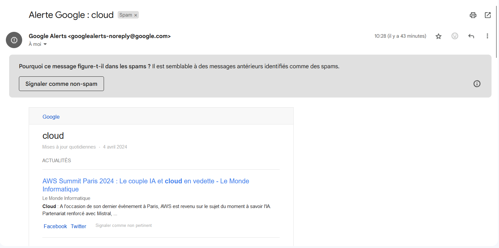

L’IA et la Recréation de la Voix des Défunts
2022 - 2024
Qu'est-ce qu'une veille informationnelle ?
La veille informationnelle est un processus par lequel une personne ou une organisation surveille régulièrement l'environnement informationnel pour rester informée des développements, des tendances, des événements et des changements pertinents dans son domaine d'intérêt. C'est une pratique essentielle dans de nombreux domaines.
Sujet de la veille informationnelle
J'ai choisi de consacrer ma veille informationnelle au domaine L’IA et la recréation de la Voix des Défunts.
Thématique : Quels sont les enjeux éthiques, juridiques et techniques liés à l'utilisation de l'intelligence artificielle pour imiter la voix des personnes décédées ?
D'où viennent les informations ?
Les informations arrivent sous forme de mail de google alerte tous les jours des rapports sont envoyés et sont par la suite traités et triés dans ma boite mail.
Introduction
L'intelligence artificielle (IA) offre la possibilité de recréer la voix des personnes décédées, une avancée technologique fascinante mais controversée. Des entreprises ont déjà exploré cette technologie pour ramener virtuellement à la vie des célébrités ou des figures historiques. Toutefois, cette technologie soulève des questions complexes, en particulier concernant la protection des données personnelles, l'éthique et la gestion juridique des voix des défunts. Cette veille vise à explorer ces enjeux sous trois angles : éthique, juridique et technique, en s'appuyant sur des cadres légaux existants.
- Enjeux éthiques Recréer la voix d’un défunt sans son consentement peut être perçu comme une atteinte à sa dignité, touchant à la représentation posthume de la personne. Selon l'article 16-1-1 du Code civil français, le respect dû au corps humain ne cesse pas avec la mort, ce qui implique également la considération du respect de l’image et de la voix. L’article 6 du Règlement général sur la protection des données (RGPD) stipule que le traitement des données doit être fondé sur un consentement explicite. Or, en l’absence de dispositions spécifiques sur la voix des défunts, il est indispensable de recueillir leur accord de leur vivant.
- Enjeux juridiques: La voix, étant une donnée biométrique, est protégée par les lois sur les données personnelles. Le RGPD considère les données biométriques comme des informations sensibles (Article 9), nécessitant un consentement explicite pour tout traitement. Cependant, le RGPD ne traite pas explicitement des données après la mort. En cas de décès, les ayants droit peuvent autoriser l’utilisation des données vocales. Toutefois, l’exploitation commerciale non autorisée, comme les deepfakes utilisant la voix de célébrités décédées, pourrait entraîner des litiges pour atteinte à la vie privée et à la dignité. Les articles 9 et 226-1 du Code civil français protègent les droits à l’image et à la vie privée, mais leur application à la voix reste à définir.
- Enjeux techniques : Des technologies comme WaveNet de Google ou Lyrebird permettent de recréer la voix d'une personne avec seulement quelques minutes d'enregistrement. L'IA apprend les intonations, le timbre, et les spécificités vocales pour générer une reproduction quasi-identique. Cette technologie repose sur l'apprentissage automatique, où le système s’entraîne à partir de données vocales pour recréer une voix synthétique de haute qualité.
Origine
La capacité de représenter et de recréer des voix humaines de manière réaliste est le résultat de plusieurs décennies de recherche et d'innovation.
En 1939, Homer Dudley développe le Voder, le premier synthétiseur vocal électronique, et en 2006, Geoffrey Hinton et ses collègues publient des travaux sur les réseaux de neurones profonds, marquant le début de l'ère moderne de l'apprentissage profond, essentiel pour la synthèse vocale réaliste.
Avantages: La recréation de la voix des défunts grâce à l'IA peut offrir un réconfort émotionnel aux proches en leur permettant d'entendre à nouveau la voix de leurs êtres chers.
Inconvénient: Elle soulève également des préoccupations éthiques et juridiques importantes, notamment en matière de consentement, de respect de la mémoire des défunts et de protection des données personnelles.
Acteurs Majeurs de l'IA et de la Recréation de la Voix des Défunts
.jpg)

QUELQUE EXEMPLE
La publicité de l'acteur Anthony Bourdain
- L'acteur Anthony Bourdain: En 2021, un documentaire intitulé Roadrunner: A Film About Anthony Bourdain a utilisé l’intelligence artificielle pour recréer la voix de Bourdain, célèbre chef et présentateur décédé en 2018. Le réalisateur a généré des phrases que Bourdain n’avait jamais prononcées, en imitant sa voix à partir d’enregistrements préexistants.
- Problèmes éthiques : Cela a provoqué un tollé public, notamment de la part des fans et des proches de Bourdain, qui ont estimé que cette utilisation n'était pas éthique. L'usage de la voix sans son consentement de son vivant soulève des questions sur la mémoire et le respect de la volonté du défunt. Même si sa famille avait donné son accord, cela n'a pas empêché le débat sur la frontière entre hommage et exploitation.
- Problèmes juridiques: Il n’y avait aucun cadre juridique clair qui interdisait ou encadrait l’utilisation de la voix de Bourdain. Cette affaire a mis en lumière l’absence de réglementation sur la recréation vocale posthume et la protection des droits des défunts.
L’exemple de James Earl Jones :
- James Earl Jones: En 2022, il a été révélé que James Earl Jones, l'acteur légendaire derrière la voix de Dark Vador dans Star Wars, avait donné son accord pour que son rôle soit continué à travers une IA, même après sa mort. En collaboration avec la société ukrainienne Respeecher, Lucasfilm a utilisé une IA pour recréer et moduler sa voix à partir de ses enregistrements passés afin de lui permettre de « jouer » Dark Vador dans les futures productions.
- Problèmes éthiques: Ce cas est particulier car James Earl Jones a donné son consentement de son vivant pour que sa voix soit recréée par une IA. Toutefois, cela soulève des questions sur la manière dont cette technologie pourrait être utilisée sans consentement dans d'autres cas, en particulier si l'acteur n'avait pas fait ce choix avant sa mort. La question de la longévité artificielle d'un acteur soulève également des débats sur l'authenticité et la continuité de l'œuvre artistique.
- Problèmes juridiques: Comme Jones a donné son consentement, la question juridique est relativement claire ici. Cependant, cela montre que des accords explicites doivent être mis en place de manière proactive. Le RGPD et des lois similaires ne protègent pas encore pleinement ces types de situations à long terme, notamment en ce qui concerne les droits des personnes après leur décès.
L’exemple des deepfakes vocaux pour tromper des familles ou des entreprises:
- L’exemple des deepfakes Une utilisation plus inquiétante de l'IA pour recréer la voix des défunts a été rapportée dans des affaires de fraude. En 2019, un PDG a été victime d'une escroquerie utilisant une IA pour imiter la voix de son supérieur hiérarchique décédé, l'incitant à transférer d'importantes sommes d'argent.
- Problèmes Éthiques: Ce type de fraude montre les risques de l'utilisation non éthique de la synthèse vocale, où des criminels utilisent la voix recréée à des fins malveillantes.
- Problèmes Juridiques: Dans ce cas, l'article 226-1 du Code pénal (France), qui punit l'atteinte à la vie privée et l'usurpation d’identité, pourrait être appliqué. Cependant, la sophistication des deepfakes rend difficile la détection et la prévention de ces escroqueries à grande échelle.
QUI EST-CE ?